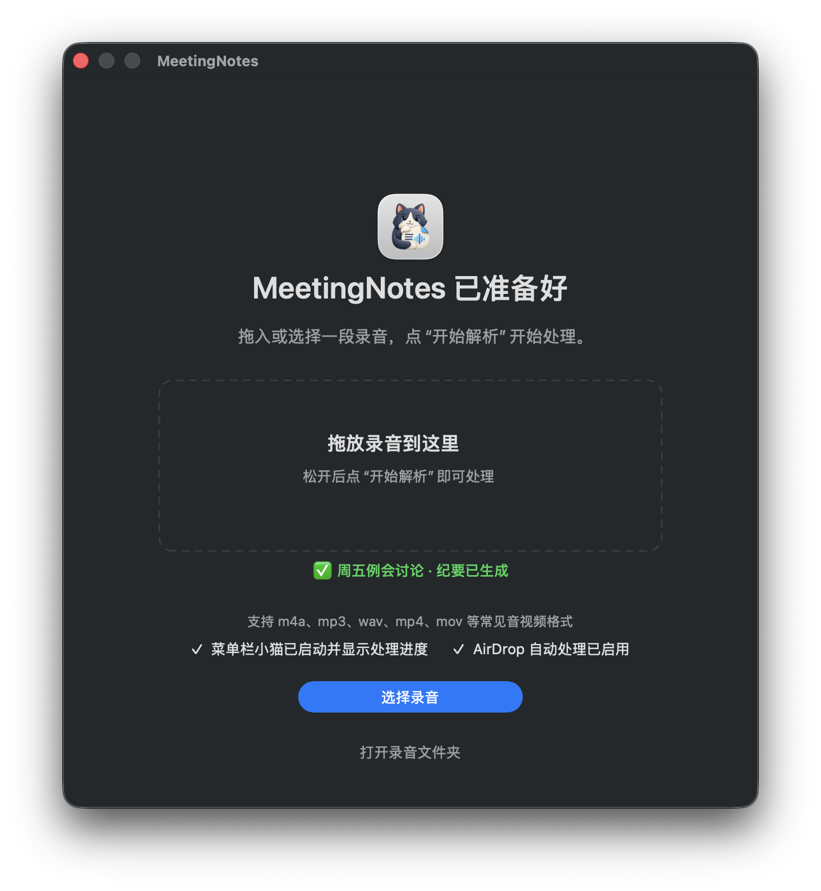
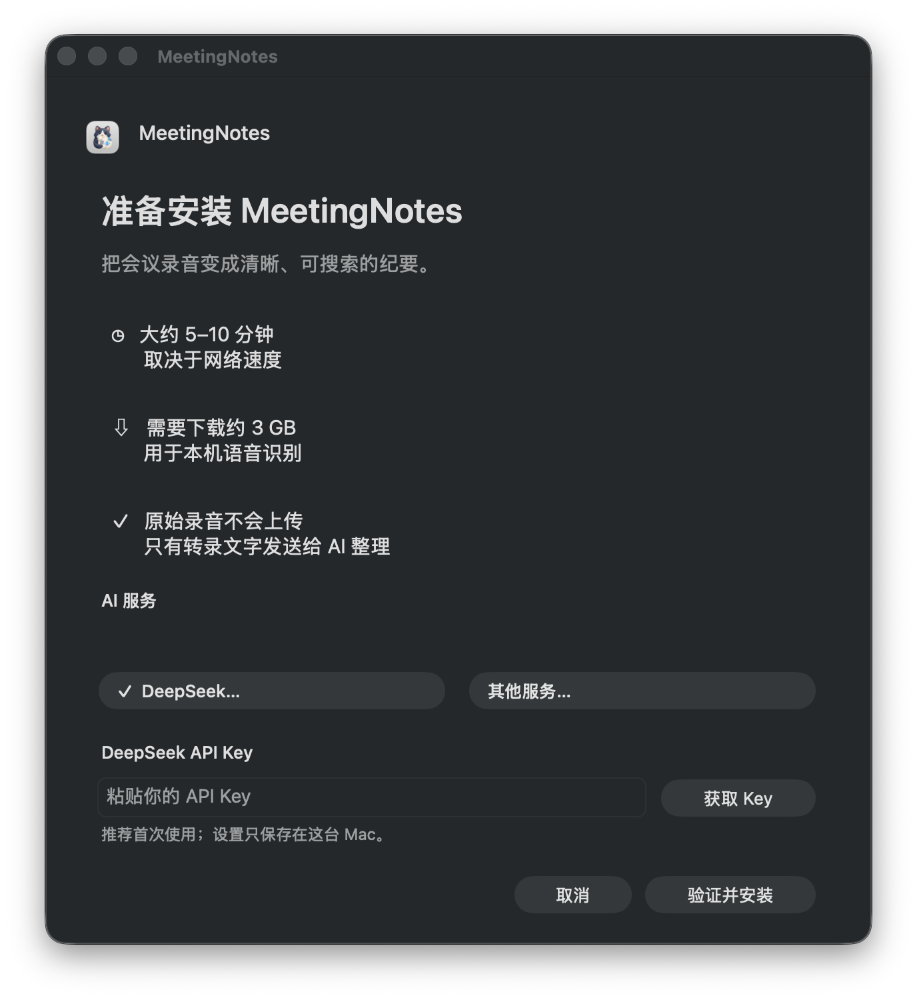
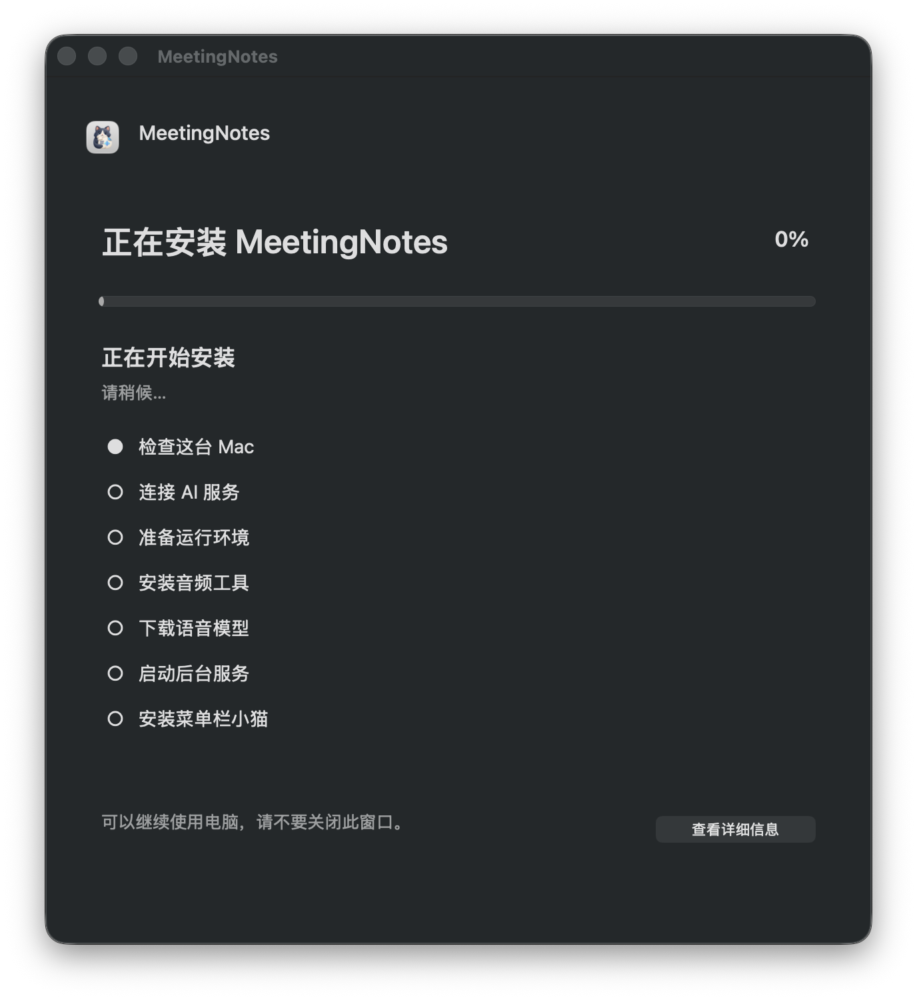
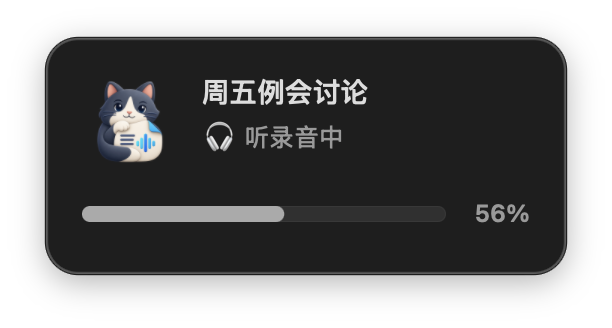
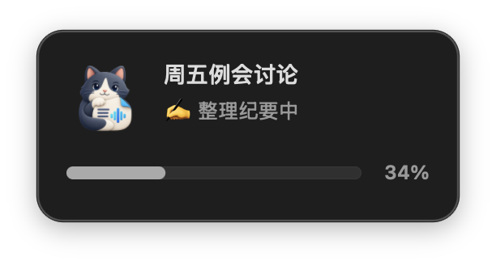
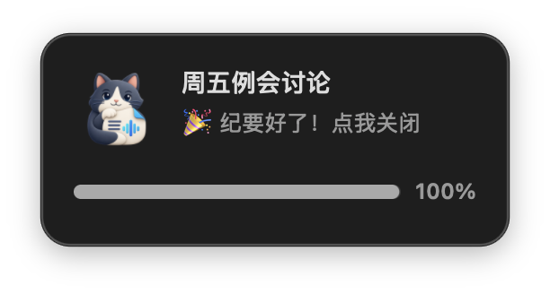

录音有了，信息仍然找不到
完整录音太长，人工回听成本高；普通摘要又容易丢失决定、待办、分歧和阻塞。
独立 AI 产品 · 本地会议知识助手
MeetingNotes（声笺）把 Mac 上的会议录音转成按议题组织、可搜索、可回查的 Markdown 纪要。原始录音与语音识别留在本机，只有识别后的文字交给用户配置的 AI 服务整理。

The real job
完整录音太长，人工回听成本高；普通摘要又容易丢失决定、待办、分歧和阻塞。
说话人、专有名词和责任归属一旦判断错误，越像正式纪要，误导性反而越强。
如果安装、等待和失败都没有清晰反馈，再强的处理能力也很难进入日常工作。
REAL RECORDING > PRETTY OUTPUT
短样本里表现漂亮的模型，到了 71 分钟、中英混杂且充满专有名词的真实会议中，可能出现重复、错词和错误归属。产品方向因此从“生成更多内容”转向“先保证可核对和不编造”。
没有可靠说话人信息时，不把观点强行安到某个人名下。
待办只有在录音明确指派且人名可信时才填写负责人。
纪要不是唯一真相，用户可以沿着产物回查信息来源。
Local-first pipeline
用户只需要拖入录音或通过 AirDrop 发送文件。系统负责格式处理、本机识别、内容整理、结果保存与可选的 Obsidian 同步。
支持常见音频与视频格式
原始录音不离开 Mac
文字交给已配置的 AI 服务
可搜索，也能回查原始语境
A system that can fail safely
Qwen3-ASR 负责主要转录；返回为空或发生异常时自动回退 Whisper。
清理异常重复字符和已知幻觉片段，再进入整理与纪要阶段。
从纪要中沉淀关键实体，用于后续会议里的专有名词纠错。
整理或纪要失败时，已经生成的转录不会消失，原录音保留等待重试。
录音、转码和识别都在本地完成；只有转录文字发送给用户选择的服务。
原始转录、分段整理稿、结构化纪要分开保存，不把模型输出当唯一证据。
From script to product
MeetingNotes 从后台脚本逐步变成可双击安装、拖放录音、持续反馈状态的 Mac 产品。安装和等待不再只是工程过程，而是产品体验的一部分。





仍在继续改善首条录音可能需要补充下载对齐与兜底模型，目前这段等待的界面反馈仍需进一步完善；内测包也尚未签名和公证。
End-to-end ownership
我独立完成产品定义、交互与安装体验、Agent 协作实现、真实录音评测、质量机制、测试验收和内测发布。
目标不是“自动摘要”，而是减少会后整理成本，同时保留决策、待办、分歧、风险与回查路径。
不被短样本和流畅文案迷惑，用完整长会议比较转录结果，并据此调整模型、提示词和信息结构。
把模型下载、处理进度、等待、失败与重试转成普通用户能理解的安装器、拖放入口和状态反馈。
完成本地处理链、菜单栏状态、安装与升级、发布白名单、隐私边界和 Mac 内测包。
Evidence, not a demo
当前项目已用 71 分钟真实技术会议验证产品方向；本次审读中，项目环境下 32 项标准 Python 测试通过，仓库还覆盖安装、升级、下载、发布和首次运行等脚本测试。页面只展示已实现能力，并明确保留内测限制。
我自己也是它的长期用户——每次真实会议后都用它出纪要，用了一段时间，整条流程已经顺手到几乎无感。
查看代码、安装包与使用说明 ↗